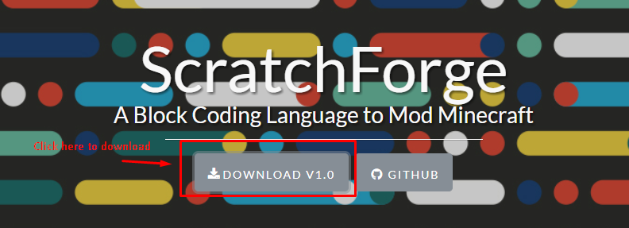
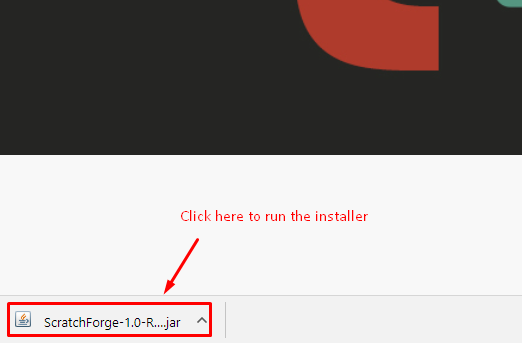
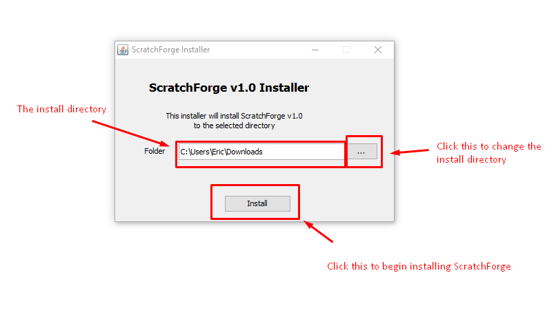
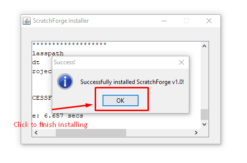

1) Before we start, make sure you follow these instructions first before you start these instructions!
2) In a web browser, navigate to:
http://scratchforge.golde.org/
3) Click the download button. The number after "v" may be different than 1.0 -- that is OK. (This is the ScratchForge version number)

4) Once it finished downloading, click the file icon in the lower-left corner of your browser.

5) The ScratchForge installer will start.

6) The ScratchForge installer has finished. Click OK to exit.

7) You are DONE!